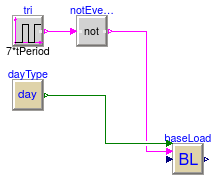

Package with base classes for Buildings.Controls.Predictors.Examples
This package contains base classes that are used to construct the models in Buildings.Controls.Predictors.Validation.
Extends from Modelica.Icons.BasesPackage (Icon for packages containing base classes).
| Name | Description |
|---|---|
| Partial base class for simple test case of base load prediction |
 Buildings.Controls.Predictors.Validation.BaseClasses.PartialSimpleTestCase
Buildings.Controls.Predictors.Validation.BaseClasses.PartialSimpleTestCase
Partial base class for simple test case of base load prediction

Partial base class to build test for the load prediction.
This model has been added to the library to verify and demonstrate the correct implementation of the load prediction model based on a simple input scenario.
Extends from Modelica.Icons.Example (Icon for runnable examples).
| Type | Name | Default | Description |
|---|---|---|---|
| Time | tPeriod | 24*3600 | Period [s] |
| Time | tSample | 3600 | Sampling period [s] |
| Integer | nPre | 12 | Number of time steps to predict |